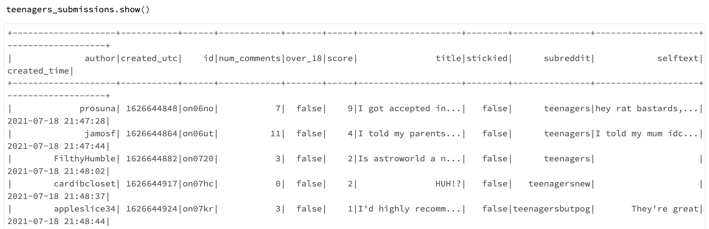

Exploratory data analysis
After basic data cleaning procedures, such as removing unneeded variables and removing rows with NA, the two datasets we are going to use contain metadata of submissions and comments from subreddits that contains the words teenagers . The submission dataset is a collection of the reddit submissions including 1770430 rows and 11 variables in total, while the comment dataset is a collection of the comments under different posts containing 38152167 rows and 11 variables. Below are some important columns we would like to use later.

# transform1: change utc to readable timestamp format
teenagers_comments = teenagers_comments.withColumn("created_time", to_timestamp(teenagers_comments["created_utc"]))
# transform2: extract hour part from readable timestamp "created_time"
comments_hour = teenagers_comments.limit(1000000).toPandas()["created_time"].apply(lambda x: x.hour).to_frame()
This plot shows that teens are more active at midnight and less frequently use Reddit in the morning. Thus, if someone wants more attention, they could send a submission or comment at midnight.
Text data Preprocessing
a. Regular expressions & NLTK:
# Clean the variable "selftext" of the teenager_submissions table:
Sub_text = teenagers_submissions.select("selftext").toPandas()
Sub_text = Sub_text.sample(frac=0.01, replace=True, random_state=124)
def clean_text(text):
text = text.lower()
text = re.sub(r'[^(a-zA-Z)\s]','', text)
text = re.sub('\[[^]]*\]', '', text)
return text
Sub_text["selftext"] = Sub_text["selftext"].apply(clean_text)
nltk.download("stopwords")
stop = stopwords.words("english")
Sub_text["selftext"] = Sub_text["selftext"].apply(lambda x: ' '.join([word for word in x.split() if word not in (stop)]))
b. johnsnowlabs sparkNLP (Build Pipelines):
# Clean the variable "body" of the teenager_comments table:
documentAssembler = DocumentAssembler().setInputCol("body").setOutputCol("document")
tokenizer = Tokenizer().setInputCols(["document"]).setOutputCol("token")
normalizer = (
Normalizer().setInputCols(["token"]).setOutputCol("normalized").setLowercase(True)
)
stop_words = (
StopWordsCleaner.pretrained("stopwords_en", "en")
.setInputCols(["normalized"])
.setOutputCol("clean_normalized")
.setCaseSensitive(False)
)
stemmer = Stemmer().setInputCols(["clean_normalized"]).setOutputCol("stem")
# finisher converts tokens to human-readable output
finisher = Finisher().setInputCols(["stem"]).setCleanAnnotations(False)
pipeline = Pipeline().setStages(
[
documentAssembler,
tokenizer,
normalizer,
stop_words,
stemmer,
# lemmatizer,
finisher,
]
)
# try and show the process use mini sample
teenagers_comments_mini = teenagers_comments.limit(1000).toPandas()["body"]
teenagers_comments_subreddit_mini = teenagers_comments.limit(1000).toPandas()["body"]
p_model = pipeline.fit(spark.createDataFrame([[""]]).toDF("body"))
df = spark.createDataFrame(pd.DataFrame({"body": teenagers_comments_mini}))
result = p_model.transform(df)
Machine Learning Pipelines (Spark ML)
In this part, we want to show how to create spark ML pipelines. For example, we make a dummy variable "author_grade" label and use other variables, such as num_comments, selftext_len, and hour when submission is published, as predictors. Then we build Random Forests to predict the most important predicator, and the result shows variable num_comments wins.
We also use Accuracy, Confusion Matrix, and AUC as criteria to evaluate the prediction ability of our model.
a. Random Forest (example):
stringIndexer_author_grade = StringIndexer(
inputCol="author_grade", outputCol="author_grade_label"
)
stringIndexer_subreddit = StringIndexer(inputCol="subreddit", outputCol="subreddit_ix")
onehot_subreddit = OneHotEncoder(inputCol="subreddit_ix", outputCol="subreddit_vec")
vectorAssembler_features = VectorAssembler(
inputCols=["num_comments", "selftext_len", "hour", "subreddit_vec"],
outputCol="features",
)
# Fine turn parameters: change the number of trees
rf = RandomForestClassifier(
labelCol="author_grade_label", featuresCol="features", numTrees=10
)
labelConverter = IndexToString(
inputCol="prediction", outputCol="predicted_author_grade", labels=["normal", "top"]
)
pipeline_rf = Pipeline(
stages=[
stringIndexer_author_grade,
stringIndexer_subreddit,
onehot_subreddit,
vectorAssembler_features,
rf,
labelConverter,
]
)
# Fit the model
model_rf = pipeline_rf.fit(train_data)
# Plot to find important features:
import matplotlib.pyplot as plt
rf_important_featrues_df = pd.DataFrame(
zip(model_rf.stages[-3].getInputCols(), model_rf.stages[-2].featureImportances)
)
rf_important_featrues_df = rf_important_featrues_df.rename(
columns={0: "InputCols", 1: "featureImportances"}
)
rf_important_featrues_df = rf_important_featrues_df.sort_values(
by=["featureImportances"]
)
plt.style.use("ggplot")
plt.barh(
rf_important_featrues_df["InputCols"],
rf_important_featrues_df["featureImportances"],
color="#F79604",
)
plt.grid(False)
plt.title("Feature Importances", fontdict={"fontsize": 20})
plt.ylabel("features", fontdict={"fontsize": 15})
plt.xlabel("important values", fontdict={"fontsize": 15})
plt.savefig("../../[your_file_path]")
b. Model evaluation:
☕ Accuracy
evaluatorRF = MulticlassClassificationEvaluator(
labelCol="author_grade_label", predictionCol="prediction", metricName="accuracy"
)
accuracy_rf = evaluatorRF.evaluate(predictions_rf)
print("RF_Accuracy = %g" % accuracy_rf)
print("RF_Test Error = %g" % (1.0 - accuracy_rf))
☕ Confusion Matrix
import plotly.express as px
fig = px.imshow(cm, color_continuous_scale="gnbu",
labels=dict(x="Predicted Class", y="True Class", color="labels number"),
x=["T", "F"],
y=["T", "F"],
text_auto=True)
fig.show()
☕ AUC
evaluatorRF = BinaryClassificationEvaluator(
labelCol="author_grade_label",
rawPredictionCol="prediction",
metricName="areaUnderROC",
)
roc_result_rf = evaluatorRF.evaluate(predictions_rf)
print("RF_Accuracy = %g" % roc_result_rf)
Conclusions
In this blog, we first use Word Cloud to give an important impression about what the text says, then show how to use NLTK and spark NLP to do basic text cleaning and finally show how to use spark ML to build pipelines. Although we mention some business sense when analyzing data, we still need to consider more. If you are interested in this project, you can click the link below, our group mate analysis from other angles, or contact me directly through email.
Links for more details